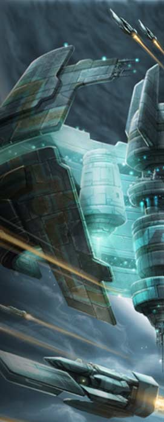

(dit "Shred" au sein de groupe")
né le 24/08/1973 à Las Vegas (précision pour les filles :-)
Je joue depuis 10 ans de la guitare et depuis 4 ans dans Falkirk. J'adore le heavy métal de la fin des années 80, début 90 comme Helloween, Iron Maiden, mais je suis aussi emballé par les nouvelles formations: Symphony X, Nightwish, Rhapsody... J'écoute cependant un peu de tout, des musiques de films au black metal (Dimmu Borgir, Dissecsion) En tant que musicien, mes références sont Malmsteen, Gary Moore, Satriani, John Norum, rien de très original pour un gratteux. J'adore les guitares et j'en ai plein (9), je joue principalement sur une Washburn customisée par moi, dont le modèle ne se fait plus (signature Steve Stevens), une fender stratocaster un peu trafiquée, et une ESP "Edwards" trafiquée aussi. Je branche le tout sur un POD line 6, Ampli 50/50 Peavey et baffles 4X12 Marshall JCM 900, c'est tout. Je suis heureux de jouer dans un groupe comme Falkirk, on est tous des potes et on se fait plaisir en jouant notre musique. Notre but est de faire notre place dans le petit monde du métal, et de réaliser des albums de mieux en mieux.
(known as "Shred" in FalkirK :-))
birth
: August, the 24th 1973, Las Vegas
I play guitar for10 years, and it's 4 years
I play with FalkirK. I love late 80's and early 90's heavy metal like
Helloween, Iron Maiden, but I also love new bands like Symphony X, Nightwish,
Rhapsody....Yet I listen at many different styles, movies soundtracks
or black metal (Dimmu
Borgir, Dissecsion). As a musician, mes gods are
Malmsteen, Gary Moore, Satriani, John Norum,
nothing special for a guitar player. I own seven guitars, and I usually
play on Washburn, cutomed by me. It's an old sold-out guitar (Steve
Stevens). I aslo play on fender stratocaster, ESP "Edwards".
I plug the stuff in a POD line6, 50/50 Peavy amplifier, and 4x12 Marshall
speakers, that's all.
I'm happy to play with FalkirK, because we're friends and we do what
we like. Our aim is to grow up in the little metal world, and to release
better albums each time.